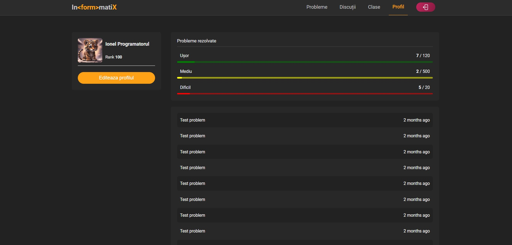

This document aims to define the software requirements for the
"Informatix" project, an innovative web application designed to
facilitate high school students' learning of programming through
problem-solving activities. The scope of this document encompasses the
description of the product and its functionalities, ensuring clarity
regarding the objectives and features of the system.
1.2 Scope
The software under specification is a web application designed to
facilitate programming learning for high school students. Its primary
purpose is to provide a platform where students can solve programming
problems, proposed and curated by teachers. The application allows
teachers to create classes, enroll students, assign problems as
assignments, and evaluate students' submissions. Students can solve
problems, submit solutions for evaluation, comment on problems, and
rate them. Additionally, the application offers an API for seamless
integration with other web applications and supports the export/import
of problems in various open formats. The overarching goal of the
software is to enhance programming skills among high school students
through interactive problem-solving activities, fostering
collaboration and knowledge sharing within a structured educational
environment.
1.3 Intendent audience
This document is intended for various stakeholders involved in the
development, management, and usage of the application, including
developers, teachers, students, and administrators. For developers, it
provides detailed technical specifications. Teachers can understand
the platform's capabilities for integrating it into their teaching
methods. Students can comprehend the features available for their
learning journey. Administrators can oversee the application's
deployment and maintenance. For optimal understanding, readers are
encouraged to begin with the overview sections and then navigate to
sections relevant to their roles or interests.
The web application described in this SRS stands as an independent
product tailored specifically for the educational domain, focusing on
programming learning for high school students. This application is not
a replacement for existing systems but rather serves as a
complementary tool to enhance the learning experience in
programming-related subjects. It provides a novel approach to learning
by engaging students in problem-solving activities under the guidance
of their teachers. In the context of a larger educational ecosystem,
this software interfaces with existing learning management systems,
student information systems, and other educational platforms. It
provides seamless integration through its API, allowing data exchange
and interoperability with external systems. Below is a simplified
diagram illustrating the main functionalities of the overall system:
2.2 Product Functions
The functions that the product must perform are:
login / register / logout function
addProblem function
deleteProblem function
rateProblem function
comment function
createClass function
addStudent function
removeStudent function
evaluateStudent function
exportData function
importData function
2.3 User Classes and Characteristics
Informatix serves diverse user classes, each playing a crucial role in
its ecosystem:
2.3.1 Students
Students are the primary users of Informatix, engaging regularly
with the platform to refine their programming skills through
challenges and peer collaboration. They utilize features such as
problem evaluation and solution commenting to enhance their learning
experience. Informatix caters to students of varying technical
proficiencies and educational backgrounds, providing a dynamic
environment for skill development.
2.3.2 Teachers
Teachers utilize Informatix to facilitate learning and assess
student progress efficiently. With access to administrative
functionalities, they manage classes, create assignments, and
evaluate submissions within the platform. Their diverse technical
expertise enables them to align tasks with curriculum objectives,
fostering collaborative learning environments.
2.3.3 Administrators
Administrators maintain Informatix's smooth operation, handling
system-level tasks such as user account management and technical
issue resolution. Their advanced technical skills ensure system
integrity and data security, contributing to a seamless user
experience. Proactive and responsive, administrators play a crucial
role in providing technical support to users.
2.3.4 External Applications (via API)
External applications integrate seamlessly with Informatix via its
API, enhancing its functionality across diverse platforms.
Developers leverage the API to access challenges and data, enriching
their own platforms with programming tasks. With a solid grasp of
web technologies, they ensure smooth interaction between Informatix
and external systems, expanding the platform's reach and usability.
2.4 Operating Environment
This product being a web application is implemented as web responsive,
so it can be used as well on both computer / laptop and tablets / mobile
phones. The minimum set of browsers that must be supported is:
Apple Safari
Google Chrome
Mozilla Firefox
Opera
2.5 Design and Implementation Constraints
Developers need to consider various factors while building the
application. These include adhering to regulatory policies like GDPR
for user data protection, implementing robust security measures
against common threats, designing a scalable architecture to handle
potential user growth, ensuring cross-browser compatibility and
accessibility, and providing documentation and ongoing support for
maintenance. Additionally, they must focus on data validation, API
design for interoperability, performance optimization, and error
handling for a seamless user experience.
2.6 Assumptions and Dependencies
Technologies used in implementation of the project are HTML5, CSS3,
JavaScript (frontend). The backend development relies on the Node.js
ecosystem, including libraries (like JWT) and package management tools
(like npm). We plan to use PostgreSQL database. PostgreSQL is known
for its reliability, performance, and robust feature set, making it a
popular choice for both small-scale applications and large-scale
enterprise systems.
3. External Interface Requirements
3.1 User Interfaces
Fig.1 - Login Page.Fig.2 - Main problems page.Fig.3 - Solve problem page

Fig.4 - Account pageFig.5 - Add problem page
3.2 Hardware Interfaces
The minimum hardware requirements in order to use InformatiX are the
minimum hardware requirements of the preferred web browser.
An internet connection is mandatory in order to allow the browser
software interfaces to connect to the internet to access InformatiX.
3.3 Software Interfaces
3.3.1 Operating Systems
InformatiX supports the following operating systems*:
Windows
Linux
MacOS
Android
iOS
* - any version that has intalled a browser in the latest stable
version.
3.3.2 Browsers
InformatiX is tested and supports the following desktop and mobile
browsers*:
Google Chrome
Mozilla Firefox
Microsoft Edge
Safari
Opera
* - testing was done in the latest stable version.
3.4 Communications Interfaces
Internet Protocol (IP) shall be used by the software interfaces to
connect to the internet.
The communication architecture must follow the client-server model.
Communication between the client and server must be served over HTTP
Secure (HTTPS).
4. SYSTEM FEATURES
This section outlines the major services provided by Informatix,
organized by system features:
4.1 Problem Management
4.1.1 Problem Submission and Evaluation
This feature enables students to submit solutions to programming
problems and allows teachers to evaluate and provide feedback on
submitted solutions. Priority: High.
4.1.2 User Actions and System Responses
Student submits solution.
System stores solution and notifies teacher.
Teacher evaluates solution and provides feedback.
System updates submission status.
4.1.3 Functional Requirements
Students can submit solutions with accompanying code.
Teachers can view submitted solutions and provide feedback.
Teacher validates submitted solutions for completeness and
correctness.
Notifications are sent to students upon evaluation of their
submissions.
Feedback provided by teachers is stored and accessible to
students.
4.2 Class Management
4.2.1 Class Creation and Student Enrollment
This feature allows teachers to create classes and enroll students,
facilitating organization and management of student groups.
Priority: Medium.
4.2.2 User Actions and System Responses
Teacher creates a new class and assigns a unique identifier.
Teacher adds students to the class by providing their email
addresses or usernames.
System verifies student identities and adds them to the class
roster.
4.2.3 Functional Requirements
Teachers can create new classes and add students.
System verifies student identities and ensures accurate
enrollment.
Students receive notifications upon enrollment in a class.
Teachers can view and manage class rosters, including adding or
removing students as needed.
4.3 Homework Management
4.3.1 Homework Creation and Distribution
This feature enables teachers to create programming assignments and
distribute them to students within their classes. Priority: High.
4.3.2 User Actions and System Responses
Teacher creates a new homework, specifying title, description, and
deadline.
Teacher selects problems from the platform's repository or
proposes new problems for the homework.
System generates unique assignment IDs and distributes them to
students in the designated class.
4.3.3 Functional Requirements
Teachers can create new homework and select problems from the
platform's repository or propose new problems.
System generates unique assignment IDs and distributes them to
students.
Students receive notifications of new assignments and can access
them from their dashboard.
System tracks assignment submissions and deadlines, providing
reminders to students as needed.